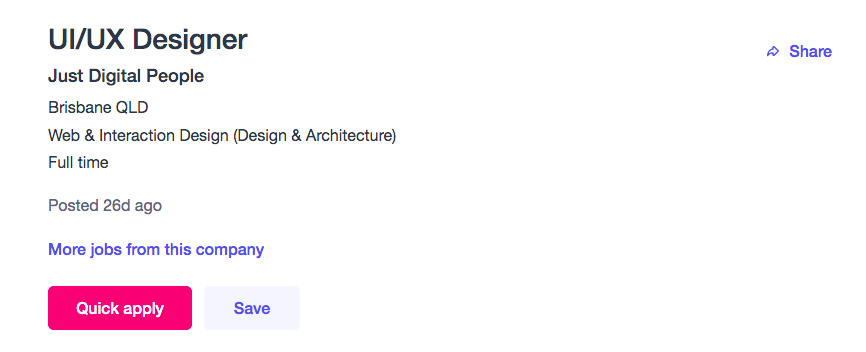

Personal Information
A little description about me is that I have a Chinese background,
as my parents are Cantonese born in Vietnam, although the languages I'm
able to speak are Cantonese, English and Mandarin.
My latest completed education was a VCE high school diploma, and although
I am quite nervous, I am excited to begin university. At my leisure, I
enjoy drawing, playing video games and listening to music.
| ID: s3842151 |
Sana Sananana |
| @: s3842151@student.rmit.edu.au |
COSC2196 Assessment:1 |
Interest in IT
What intrigues me about IT is to create things that I like
that require the use of computer technology. Design, which is also an interest
of mine, and IT go hand in hand. I find areas like UI/UX design, game
development, or anything interactive to be quite intriguing, hence it's
something I'd like to explore more of. I'd like to create personal projects,
expand creative ideas, and enhance my abilities through the use of technology.
The dedication and effort put in IT career work inspires me to also create
something by using my own knowledge and hands. Hoping someday, people would
find my ideas to be helpful. I’m only slightly knowledgeable on small areas
about computer hardware and common computer shortcuts. As career experience,
I have also never set foot in the anywhere in the IT industry.
I have heard that RMIT is a well received institution and gives a great
opening to the IT industry. Technology related courses are said to be more
hands on which I find much better for learning. I'm looking forward to
learning variety of subjects to find the most suitable path for me.
Exploring not only the technical side of IT but business, data and law in
relation to sharpen my craft in other aspects of IT.
Ideal Job

Click this
link to access the webpage.
My ideal career lies somewhere in the UI/UX industry, and an example
I selected is the company Just Digital People.
They have a strong focus on creativity and ability, which is what I’m
looking for to get the most out of my career. They also offer working
remote and flexible which allows me to focus effectively and manage my
time at my own pace, at the comfort of my own home. As I'm not under pressure
I have a sharper mind allowing me to focus on ideas more effectively,
reflected in
correspondence to my MBTI and work style.
Their focal skills wanted emphasises on strong communication passion
for endless creativity with the process of design with the experience.
Although their experience specifications aren’t listed, It’s a common
requirement to have 3+ years of expertise in UI/UX design with company
experience and a number of portfolios showcasing your strengths.
CSS, HTML, JavaScript knowledge is also required and may also require
expertise in software such as Sketch, Framer, Axure, etc.
My Experience: I have no current work experience in this field, however
I have dabbled in some creative software such as Adobe Animate, Adobe
After Effects, Adobe Illustrator and Adobe Photoshop. I’ve also worked on
Graphic Design projects and now beginning to study the basics of HTML,
CSS and Python.
Plan: Not only will I be learning from this course, I’ll find different
free online sources to practice and sharpen my work if I have the time.
Eventually I'd like to have created personal interactive projects to display
in my portfolio.
Personal Profile
Through the results of various personality tests, it gives
me an idea regarding setbacks and assets that influence my work. A major
factor I'm aware of is that I prefer to work alone. This course will give me
an opportunity to go outside our comfort zone, and combat my weaknesses.
My
strengths lie in passion of ideas reflecting them into my work. However, for
my creativity to spark, I must first work alone to comfortably generate those
ideas, as this is my method to achieve productivity. Since that might be a
setback for other people, it is something that must be communicated. This
way, potential team members can avoid assumptions and misunderstandings. A
method that compliments my work style during group work is to use Google Docs
for discussion. Where everyone can dump their ideas, and seek approval from
all group members by commenting. There will still be times where I am not
vocal about my ideas, but I'm still open to hearing others' suggestions.
My open mindedness is useful when sorting disagreements as I have an
understanding across different points of view. Still, things like these can
be negotiable. Humility is an aspect of my personality, to create a well
balanced, cared environment where every voice is heard. This would also
lessen conflict ease disagreements. When forming a team, it's important that
I monitor the productivity and try to boost the morale when possible.
Project Idea
Overview: My project idea is an interactive visual guide for learning high
end duties in the game Final Fantasy 14. It will include imagery and written
features to help players understand what is happening in the duty, and
explain the method to approach the mechanics. The duties are simplified,
having each part separated by animations. This assists players to confront
each portion of the duty at their own pace. A fast and easy approach that can
be shared with ease and opened with simple, efficient navigation and
recognisable imagery.
Motivation: There are never enough guides. Different people have different
methods of explaining and taking in information. So each guide will have a
different effect. My goal is to not only develop something suitable the
general player-base, but engage players that have a similar learning style
to my own. Majority prefer visual guides as they have a visual idea of what
is happening. Positive feedback is often given by the community where
creators upload their craft. This is reflected on many sites like YouTube,
Twitter, and Reddit.
Description:
- The webpage will have a start page where it represents the beginning of a
specific duty being made a guide on.
- A key words page will be linked to list the name of the specific
mechanics and a brief description of what they do. If the fight has certain
status effects, there will be an icon to represent it
and a brief description of their function.
- There will be a side bar divided into sections to represent timeline and
each stage of the duty, that can be accessed at any time.
- If you want to go back to a previous slide there is an undo button to
return. This is particularly useful for players that may have already
learnt other parts of the fight and just want to come back to polish
their understanding of a certain mechanic.
- Similar to a page flipping type of transition, but without the webpage
having to reload, every sub mechanic will have animated icons to represent
each happening in the duty and how to follow.
- To advance, the user can use their arrow keys on the keyboard to
indicate whether they would like to go back or proceed; right arrow key to
next, left arrow to go back. Alternatively, they can use the space bar
to proceed.
- The guide will reflect a simplified imagery of the duty, items like
arena shape, boss icon, status effects, are included and colour coded.
Animations will also be simplified but familiar enough to recognise in
comparison to the actual fight.
- Animations will move according to each ‘slide’ controlled by the user.
For each major explanation needed, a text box will appear containing
relevant information about the strategy used to explain the mechanic
and how to resolve it.
- Occasionally there will be small pop up’s that appear on the corner at
some stages suggesting helpful tips. Users can minimise and re open them
if they wish.
- Before starting the guide, the user can select and assign a specific
role to apply onto the icons in the guide, allowing different people
to screenshot and share the guide to their own groups that suit their in
game lineup or personal use.
- If users want to access some other guides, there is a home page where
there will be a list of links to previous duties.
- Firstly separated by duty type: Extreme Trial, Savage Raid, and Ultimate
Raid.
- Secondly, separated by game expansion: Endwalker, Shadowbringers,
Stormblood, A Realm Reborn.
- Then finally, divided by a subheading indicative of each patch release,
there will be a link to each duty guide being made available.
- During a major update for a new duty, the official home page will be
updated to link the guide for the most recent duty(s). This is because
they are usually the most sought after, as well as that it is efficient
for users/players that want to check for a guide at the last minute.
Tools and Technologies:
Designs and animations will be created to implement into my
project. Applications such as Adobe Illustrator and After Effects are necessary
to create moving designs representing marker icons.
(Marker icons are a picture that appears on top of a players head signalling
a different mechanic depending on the icon.)
For planning, Clip Studio Paint is used to roughly design the UI, icon art
and majority of the visual elements. All software will be executed
on a computer.
Hosted on a webpage with a short URL, you can access it, copy and paste
with ease in game. Programming languages involve CSS, HTML and JavaScript
which will cover the function, interactivity and aesthetics.
Skills Required:
An eye for aesthetics and cohesion. The information needs to be visually
appealing and coherent. This is helpful as recognisable icons can also be
used as a quick way to come back to and have a look at when they are in
duty. A common example of this is users can alt-tab to check during downtime
or reference on another monitor screen.
Efficiency and practice with software development is important as it’ll
determine the speed of the guide's release. Players will be looking for a
guide not long after a new duty is released. Not only that, but fully
understand the game mechanics to be able to teach. Reflecting that knowledge
in the guide to make sure it’s correct and accurate.
Outcome:
If the project becomes successful, it allows me to get feedback from players
who decide to use it. There will always be new duties that come out giving me
an opportunity to develop new things guides and release them for players
eager to learn the new fight.
The issue I aim to solve is to help people that are reluctant to attempt high
end content because they are afraid they don't have the ability. This serves
as an alternative to video guides. As skipping through the timeline trying to
find what you need is time consuming and frustrating.